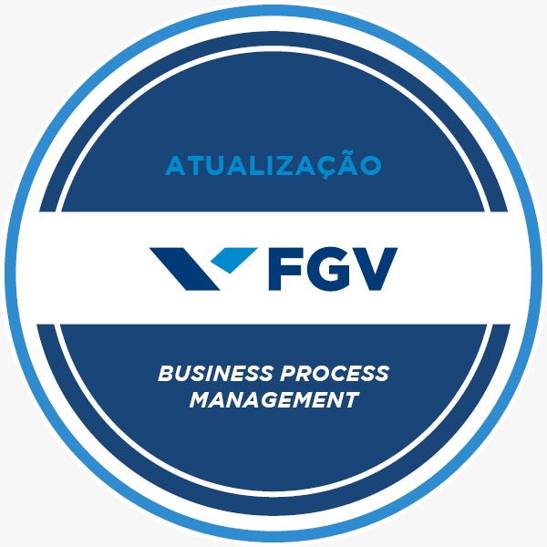

Organização operacional para clínicas, consultórios e pequenas empresas de serviços que querem crescer sem depender do improviso. Uma consultoria próxima, humana e sob medida, que melhora o que você já tem sem impor sistemas complexos.

Meu trabalho não é inventar burocracia ou entregar manuais pesados que ninguém vai ler. É entrar na rotina, ouvir a equipe, enxergar onde o tempo e o dinheiro estão vazando e construir rotinas que qualquer colaborador consiga seguir com tranquilidade e pontualidade.
Soluções desenhadas para as dores reais de quem lida diariamente com atendimento, expectativas de clientes e coordenação de equipes.
Como consultora independente, atuo de perto com você e sua equipe. Sem fórmulas prontas ou migrações traumáticas de sistemas: extraímos a máxima eficiência da sua estrutura atual.
Solicitar Conversa DiagnósticaUm método progressivo dividido em 5 etapas fundamentais para transformar a desorganização em rotinas seguras e previsíveis.
Raio-X minucioso da rotina para mapear gargalos, retrabalho e perdas invisíveis de tempo e receita.
Estruturação de processos visuais com responsáveis, prazos e regras claras para cada função.
Aplicação prática das melhorias diretamente nas ferramentas que a sua empresa já domina.
Treinamento humano e próximo para que os colaboradores executem o novo padrão com autonomia.
Painel leve com indicadores essenciais (ocupação, faltas, tempo) para manter a sustentabilidade.
Business Process Management (BPM) com foco em organização e melhoria contínua.
Especialista em Gestão de Processos de Negócio (BPM), dedicada a transformar a confusão da rotina em processos fluidos, seguros e previsíveis.
Minha atuação une os dois lados essenciais: a experiência de quem é atendido (acolhimento e pontualidade) e a tranquilidade de quem atende (equipe engajada e sem retrabalho). O resultado são rotinas viáveis que sustentam o crescimento do seu negócio.
Redução do tempo de espera, comunicação transparente e sensação de acolhimento profissional.
Menos retrabalho, funções bem delineadas e clareza total sobre as prioridades diárias.
Visão clara da ocupação da agenda, de demandas pendentes e de custos de ociosidade.
Processos que sobrevivem às trocas de funcionários e mantêm o padrão da empresa sempre alto.
Exemplos de soluções estruturadas para cenários operacionais reais em clínicas, consultórios e prestadores de serviços.
Desconexão entre o agendamento inicial por WhatsApp, o acolhimento na recepção e a continuidade do tratamento no retorno.
Revisão dos pontos de contato, criação de protocolo de confirmação ativa e organização do tempo de espera com fluxo de pré-atendimento.
Atrasos recorrentes, cancelamentos de última hora sem preenchimento e conflitos frequentes na liberação de encaixes.
Definição de regras objetivas para agendamento por tipo de procedimento, grade de horários com margem de segurança e lista de espera ativa.
Informações desencontradas passadas ao paciente, atritos entre recepcionistas e profissionais sobre encaixes e atrasos na liberação de prontuários.
Mapeamento dos pontos de atrito, padronização de respostas para dúvidas frequentes e canal interno simples de sinalização em tempo real.
Gestão realizada apenas no "feeling", sem clareza da taxa real de faltas, tempo médio de espera ou taxa de comparecimento aos retornos.
Estruturação de planilha simples de monitoramento semanal com indicadores-chave: absenteísmo, ocupação de agenda e retrabalho.
Pequena empresa com crescimento de demandas sofrendo com esquecimento de prazos, refações de serviços e acúmulo de trabalho no proprietário.
Criação de esteira visual de etapas (entrada, execução, conferência, entrega), definição de checklists operacionais e matriz de responsabilidade.
Operação com sensação de sufoco constante, precisando de soluções imediatas para desafogar o atendimento antes de reformas profundas.
Mapeamento em formato express, definição de 3 a 5 ações de impacto imediato (quick wins), treinamento rápido e suporte mensal de sustentação.
Tire suas principais dúvidas sobre o formato de trabalho, implantação e rotinas.
Com certeza. Pequenas empresas e consultórios sofrem ainda mais com a falta de processos porque qualquer erro ou atraso sobrecarrega imediatamente os proprietários. Meu trabalho é dimensionado exatamente para negócios de pequeno e médio porte, criando rotinas viáveis e econômicas.
Não. Um dos grandes diferenciais da minha consultoria é o respeito à sua estrutura atual. Trabalhamos para organizar as ferramentas que você já possui e domina (seu WhatsApp, suas planilhas, seu sistema atual). Só sugerimos novas ferramentas caso você queira e faça sentido financeiro e prático.
A resistência geralmente nasce do medo de complicar o trabalho ou de cobranças desmedidas. Como atuo ouvindo os colaboradores e envolvendo-os na solução, a equipe percebe rapidamente que as melhorias servem para diminuir a ansiedade e o retrabalho deles próprios, gerando engajamento espontâneo.
A maior vantagem é a proximidade, agilidade e responsabilidade direta. Você lida exclusivamente comigo do início ao fim: eu realizo o diagnóstico, desenho os fluxos, oriento sua equipe e acompanho os indicadores. Sem burocracia corporativa ou repasse de trabalho para terceiros.
O primeiro passo é uma conversa inicial e sem compromisso. Vamos entender como sua operação funciona hoje, quais são os maiores pontos de atrito e avaliar a melhor forma de estruturar uma proposta sob medida para sua realidade.
Vamos identificar o que está travando sua rotina e construir um caminho mais organizado, eficiente e sustentável para o seu negócio crescer.
Preencha os dados abaixo para alinharmos uma análise prática da sua rotina.